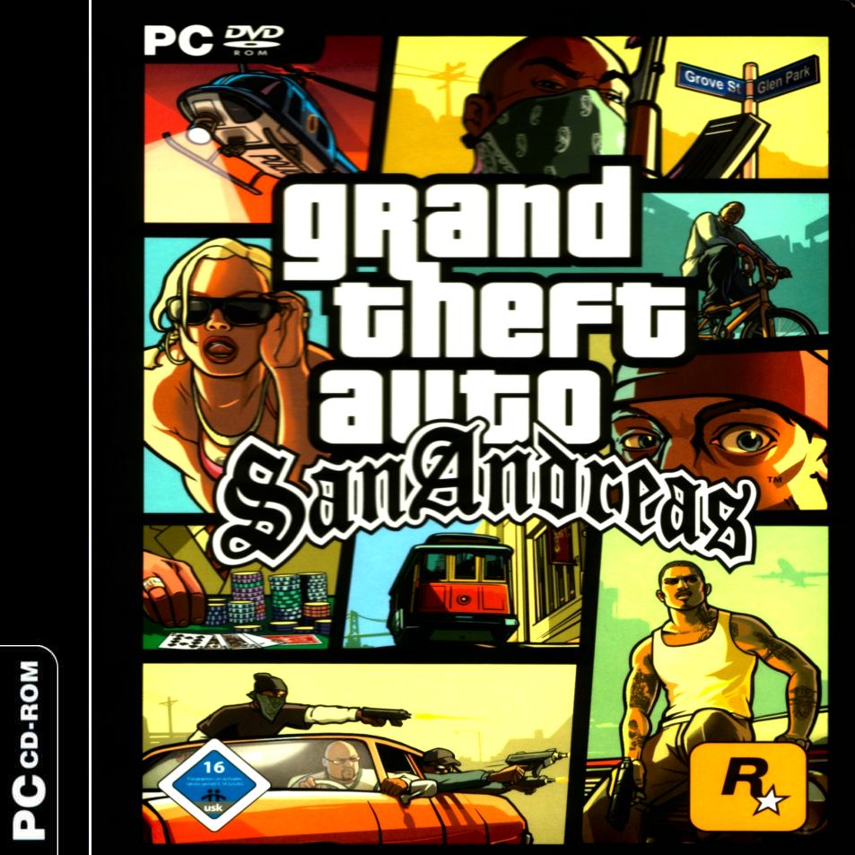

Grand Theft Auto: San Andreas
"Grand Theft Auto: San Andreas is a 2004 open world action-adventure video game developed by Rockstar North in the United Kingdom and published by Rockstar Games. It is the third 3D game in the Grand Theft Auto video game franchise, the fifth original console release and eighth game overall. Originally released for the PlayStation 2 in October 2004,[2] the game has since been released for the Xbox and Microsoft Windows in June 2005, then released on the Xbox Live Marketplace for the Xbox 360 in October 2008, then released on the PlayStation Store via PSN for the PlayStation 3 in December 2012, and has received wide acclaim and high sales figures on all platforms. It is the best-selling game of all time on PlayStation 2. It was made available on Steam on January 4, 2008,[6] and on Intel-based Macs running a minimum of Mac OS X 10.6.6 in September 2011. San Andreas was released for the PlayStation 3 via PlayStation Network in December 2012. Grand Theft Auto: San Andreas was succeeded by Grand Theft Auto: Liberty City Stories and was preceded by Grand Theft Auto: Vice City. The game is set in the semi-fictional state of San Andreas (based on California and Nevada), which contains three metropolitan cities: Los Santos, based on Los Angeles, San Fierro, based on San Francisco, and Las Venturas, based on Las Vegas. Set in 1992,[7] San Andreas revolves around the gang member Carl "CJ" Johnson returning home from Liberty City to Los Santos, San Andreas, after learning of his mother's murder. CJ finds his old friends and family in disarray. Over the course of the game, CJ gradually unravels the plot behind his mother's murder. The high-level plot of the game is based on multiple real-life events in Los Angeles including the rivalry between street gangs the Bloods and Crips (which the player's gang and rival gang are spoofed off of), the Crack epidemic (which is shown as a major point of conflict in the game), the LAPD Rampart scandal (forming the basis of several main antagonists in the game), and the game even culminates in a spoof of the 1992 Los Angeles riots."
*From the Wikipedia page.It's time to go home...
Officer's Frank Tenpenny and Eddie Pulaski have been charged with racketeering, corruption, narcotics and sexual assault. Pulaski is history, but the media aren't aware of that and he's currently believed to be on the run. It's time to go back and set things straight in Los Santos. In this final chapter, Sweet is released from prison and we witness the return of the Grove Street Families. Also in this chapter, we re-meet Mike Toreno, Maccer and Paul, and the story is complete with a huge finale involving the Johnson Brothers, Big Smoke and CJ's arch rival Officer Tenpenny. |  |

| A Home in the Hills |
Woozie, CJ, and Kendl are auditioning midgets at the Four Dragons Casino. CJ and Kendl are tired of the casino business, and it clearly isn't as easy as they first thought it would be. Carl says they need some real talent, when, co-incidently, Madd Dogg walks through the door. He's clean now, but he's not quite ready to hit the stage. He wants to go home. Carl seems interested, as Madd Dogg's mansion would be a great place to set up in LS again. Madd Dogg shamefully admits that his mansion has been seized by the Vagos drug dealer, Big Poppa. Carl is furious, and says that they're all going home.
A new scene begins showing the flight out of Venturas towards Los Santos. Carl is inside the plane with 4 triads, and all are equipped with parachutes. Kendl calls to say that she's driving to San Fierro with Madd Dogg and Cesar, to check out things there first. The plan is to parachute onto Madd Dogg's mansion and clear the place so that the rest of the crew can move in - the element of surprise. The famous Vinewood sign is shown, with some Triads parachuting in the distance. Two Triads place flares on the helipad, to give the crew an indication of where to land.
Carl jumps out of the plane. Let yourself drop for about 2 seconds, and open the parachute. Guide your way towards Madd Dogg's mansion, and land on the helipad. Eliminate all Vagos gangsters. The Triads arrive shortly, and you must make sure that none of them die. Select a weapon that's powerful and easy to reload. There is an armor pickup on the helipad if you need it. When all threats have been eliminated, lead the Triads into the mansion.
One of the crew explains that they are heavily out-numbered, but that they should be able to pull it off if they stick together. After that statement, the Triad is killed by a Vagos gangster that was hiding in the room. Clear the hallway whilst two Triads check all of the rooms. Don't be tempted to go in the rooms and help the Triads - they can take a lot of heat, and trust me, you have plenty to deal with in the hallway. As you approach the end of the hallway, Vagos will start attacking from behind aswell as the front. There is an armor pickup in the second last room on the left. Big Poppa is downstairs - chase him down and waste anybody who gets in your way. Vagos are scattered throughout the mansion, and they attack as soon as you are spotted. There's a health icon in the dining room downstairs if you require it. Make your way through the mansion and chase Big Poppa. Eliminate all attackers to protect your health, as there is no rush to catch Big Poppa. Exit the mansion, and watch as Big Poppa attempts an escape. Get in the car, and give chase. The handling on the car is poor, so take your time until you get onto the freeway, and pickup the pace. Pull alongside Big Poppa, and perform a drive-by to ensure that he won't be returning. If (after his car explodes) your vehicle catches fire, don't be alarmed as a cutscene begins before it gets the chance to blow up.
You have taken back Madd Dogg's mansion.
Respect +
Note: Do NOT save your progress at Madd Dogg's mansion. If you want to save there, purchase the Vinewood mansion behind it instead. Saving at Madd Dogg's mansion has been known to corrupt save game files and spark the famous basketball glitch.
*CJ offers Ken and Paul a job at Madd Dogg's mansion, and they gladly accept.
 |  |  |  |
 |  |  |  |
 |  |  |  |
 |  |  |  |

| Vertical Bird |
Toreno interupts the recording of a song. Carl goes to meet him outside, and Toreno takes him for a ride into the country. Toreno asks if you'd like to see your brother this week. If so, you'll need to do one more job for him. That being - steal a military jet off an amphibious assault ship and use it to destroy a flotilla of spy ships.
Get in the boat, which contains a knife and a silenced pistol, and make your way to the amphibious assault ship. You must get into the back of the ship before the door closes. Using the boat, goto the rear of the ship and jump into the water. Swim into the back of the ship so that the guards don't see you. Examine the radar to see where the guards are located. Pull the mechanic out of the forklift and kill him (using the silenced pistol) before he triggers the alarm. Make your way through the ship to the control room, eliminating any threats with the silenced pistol. Walk into the red marker in the control room to deactivate the SAM sites. Steal one of the military jets and take-off. Press R3 to raise the landing gear, and push forward on the right analog stick for a moment to build up speed. Two military jets follow, and their task is to destroy you. When a jet is in sight, press R1 and wait until the targeting circle is red before firing (using 'Circle').
When both of the jets have been destroyed, head for the spy ships. As you approach one of the spy ships, pull back on the right analog stick to hover, or simply lower the landing gear to slow down. Again, target the ships using R1 and fire when the circle turns red. Destroy all 4 ships and land the Hydra at the abandoned airstrip.
$50000, Respect +
*The Hydra is always available at the abandoned airstrip.
 |  |  |  |
 |  |  |  |
 |  |  |  |
| Home Coming |
CJ is busy on the phone, when Toreno hangs it up. He has one more job for you but Carl has had just about enough, and points a gun towards his head. Toreno has a surprise for you, and tells you to answer the phone. It's Sweet, and he has been released from prison, although he has no idea why. Toreno's last job is that you pick up your brother..
Go and pickup Sweet at the Precinct. The brothers reunite, and Carl explains all the wonderful things that have happened - stakes in a casino, business in Fierro, a mansion, etc. Sweet isn't impressed because Carl has paid little attention towards the hood. He wants to go home now and see what things are like.
Drive Sweet to Grove Street. A basehead tries to sell them a blender - mom's blender! Sweet's healthbar appears on-screen, and you must take back Grove Street from the Ballas and waste any baseheads that are destroying your gang. The baseheads are represented by red blips on the radar. When all of them have been eliminated, attack a group of Ballas to provoke a gang war. Survive three waves of attacks, just like you did in the mission Doberman, and take back the hood. It's quite useful to have a rocket launcher available for this mission, as the Ballas attack in large groups. Sweet makes it clear that Grove Street is his home.
Respect +
 |  |  |  |
 |  |  |  |
| Cut Throat Business |
Madd Dogg is watching the television, when he see's OG Loc performing his new song. Dogg realises that Loc's rhymes were taken from his rhyme book, and expresses his anger. Loc is currently being interviewed and Carl suggests dropping in unannounced.
Get in the BF Injection and take Madd Dogg to the video shoot in Flint County. Carl accuses Loc of stealing his rhymes, and Loc attempts an escape. Get in the vortex and give chase! There's no need to rush, but stay within a reasonable distance of Loc. Eventually you reach the Santa Maria pier, where Loc abandons the Vortex and enters a Go Kart. Get in the Go Kart and continue chasing Loc with Madd Dogg. After a long chase through the city, Loc stops at the Blastin Fools Records building. Madd Dogg threatens Loc and grabs the rhyme book. Meanwhile, Carl talks business with Jimmy Silverman from the records company.
Respect +
*Another prank call from Catalina. This time she brags about her new boyfriend, Claude.
 |  |  |  |
 |  |  |  |

| Beat down on B Dup |
Sweet's bitch is persuading him to take crack. Sweet almost gives in, when Carl interupts and talks some sense into his brother. The girl is angry and says he'll have to deal with B Dup. Carl seems more than happy to do so..
Take Sweet to B Dup's apartment and stop in the red marker. B Dup doesn't answer, and a basehead (wearing Grove Street colours) tells them that B Dup moved to Glen Park a while ago. Sweet threatens him, but Carl talks to Sweet and they decide to spare his life.
Goto Glen Park and provoke a gang war. This is basically a repeat of the mission Doberman. Sweet's health appears on-screen. Survive 3 waves of attacks from the Ballas and take over Glen Park. Once the hood has been taken, waste the ballas guarding the house and go and confront B Dup. B Dup says he doesn't know where Big Smoke is, and that he is paranoid thinking that everybody wants to kill him. B Dup calls Big Bear into the room and orders him to kill the Johnson Brothers. Bear refuses, attacks B Dup, and asks Carl if he can get back on the team. Sweet takes Bear to rehab.
Respect +
 |  |  |  |
 |  |  |  |
 |  |  |  |
| Grove 4 Life |
There isn't a lot involved in this mission, to be honest. Sweet is motivating the homies, and they agree that it's time to put Grove Street back on the map. Carl stops him, and says that there's a few other things he'd like to do first. Sweet complains about Carl always leaving jobs half finished. CJ decides to have it Sweet's way, and they head outside..
Take Sweet to Idlewood, which is highlighted purple on the radar. Provoke a gang war with the Ballas, and follow the steps shown here to win the territory. Take the hood, and provoke another gang war in the Idlewood area. Win the territory and take Sweet back to Grove Street, to complete the mission. Sweet gives you your cut - some money that he took from a Ballas gangster, drug money, no doubt. The Ballas are diminishing, and Grove Street are rising once again...
$10000, Respect +
 |  |  |  |

| Riot |
CJ, Sweet, Cesar, Kendl, Truth and Maccer are all glued to the television as Officer Tenpenny enters the courtroom. A news reporter tells the story: Tenpenny and Pulaski have been charged with racketeering, narcotics, corruption and sexual assault. The pair silenced Officer Ralph Pendelbury when he threatened to turn state's evidence, and the same is believe to have happened to Officer Jimmy Hernandez, who recently went missing. At this stage, Pulaski is believed to be on the run, but we all know what really happened to him.
Tenpenny leaves the courtroom, and it is announced that all charges have been dropped, due to a lack of evidence. Riots begin, and Los Santos is up in flames. There is simply no justice in Los Santos.
Take Sweet back to Grove Street safely, so that he can secure the hood. During the journey, they agree to take out Tenpenny by themselves. Watch out for exploding vehicles and rioting pedestrians. However, it's mostly a straight forward drive back to the hood - nothing too challenging.
 |  |  |  |
| Los Desperados |
Sweet is ordering the homies to get the hood locked down. He's still bitching about how little attention CJ paid towards the hood, during Sweet's absence. Cesar enters the room and asks desperately for CJ's help. Cesar helped Grove Street, so now it's time for Carl to help him. His hood is in the same condition as Grove's, and Cesar wants to take it back from the Vagos. Carl explains that he's got his own problems to deal with, and that he made a promise to Sweet. Sweet says he just wants his brother to repay his debts, so Carl decides to help Cesar afterall...
Recruit two Grove Street gangsters, and make your way to unity station to meet some Aztecas veterans. During the journey, Cesar announces that he wants to pop "the question" to Kendl, but he isn't sure if Sweet will go along with it. Carl says he will talk to Sweet, and make sure that it's okay. There are 3 Aztecas veterans at Unity Station - Sunny, Gal and Hazer. Help Cesar and the Varios Los Aztecas clear out the Vagos neighbourhood, which is highlighted yellow on the radar. You musn't let any of the veterans die. The Vagos gangsters have red arrows above their heads, and are represented by the red blips on the radar. When all of the Vagos have been eliminated, head to the alleyway. Sunny destroys the Vagos car using a rocket launcher. Eliminate the Vagos gangsters, and watch out for the one's hiding in the garage. Hazer is badly injured (there is no way of preventing this, unfortunately), and he needs to get to a hospital.
Cesar's house is being guarded by yet more Vagos. One is holding a flame thrower, and another is on the rooftop with a rocket launcher. Use a long-range weapon such as the sniper rifle to get rid of the guy with the rocket launcher, and then fight off any remaining Vagos to secure the Aztecas hood.
Respect +
*Sweet calls and explains that you must take over more gang territory for Grove Street. You must control 35% of gang territory in Los Santos to trigger the final mission.
 |  |  |  |
 |  |  |  |
| End of the Line |
Note: You must control at least 35% of gang territory in Los Santos before being able to play this mission. When you have enough territory, Sweet calls to say that he knows roughly where Smoke is hiding. The Vagos started to speak, and Smoke is hiding in East Los Santos, or Los Flores. Smoke is the only person who knows where Tenpenny is. Also, it is highly recommended that you complete the Firetruck Missions before trying this mission, so that you are fireproof. This will prove useful when escaping from the crack factory.
Get in the car with Sweet and drive to Big Smoke's crack fortress in East Los Santos, right on the edge of Los Flores. Stop in the red marker. The Johnson Brothers prepare an attack, but CJ wants to go in alone, as a repayment for the time he abandoned his family. Smoke's crack fortress is heavily guarded, and there is only one way inside. The doors are locked down because of the riots, so you'll need the SWAT tank to smash it down. Kill the guards guarding the crack fortress, and get on the bicycle. Go down to the next street, and get off the bike. Climb the garden fences and make your way towards the SWAT tank. Use the houses and fences as protection, and when you're ready, steal the SWAT tank. Goto to Big Smoke's crack fortress and drive through the wall at full speed, to smash it down. Drive over the Ballas inside the fortress, and make your way to the entrance.
Floor 1: Security Area
Smoke is on the fourth floor in his penthouse suite. You must work your way up the building through three different floors to get to him. Select a powerful weapon, crouch, and make your way upstairs. There is a Ballas gangster upstairs, so be prepared. Kill him, and another rolls out from the left of the hallway. Move forward and take a right turn. Eliminate the Ballas and Vagos gangsters, and continue moving through the crack fortress. There is an armor pickup at the end of the hallway if you need it. Crouch, go through the double doors and take cover behind the boxes. Still using the boxes as cover, waste all Vagos and Ballas gangsters, and a SWAT tank crashes through the window. Kill the SWAT team, and approach the entrance at the opposite end of the room. The gate automatically opens, and there are more attackers inside. Waste them, and again, crouch whilst moving up the stairs. Kill the Ballas gangster at the top of the stairs and collect the health pickup if you require it. Go thorugh the double doors to access Floor 2.
Floor 2: Drug Lab
Crouch as you move upstairs, and waste the Rifa gangster when you reach the top. There's an armor pickup available. Go through the set of double doors and immediately look left. Kill the second Rifa gangster, and make your way to the drug lab. As soon as you enter the drug lab, run east and use the boxes as cover. Eliminate all of the workers, and shoot the explosive barrels to help you. Goto the opposite side of the room and move upstairs, wasting anybody who gets in your way. Follow the path right around the room, and go through the set of double doors. There's another health icon towards your right. Make your way to floor three.
Floor 3: Ballas Lounge
Crouch, go up the stairs and kill the Ballas gangster waiting for you at the top. Get the armor pickup, and go through the double doors. You are welcomed by a Vagos and a Ballas gangster. Waste them, and go through the second set of double doors. The place is crawling with gangsters - leave no survivors. Make your way thorugh the rest of floor three, wasting anybody who gets in your way. Floor 3 contains a statue of Big Smoke, which highlights his success. Go and get Big Smoke!
A cutscene begins and CJ confronts Big Smoke, who is playing a video game in his penthouse suite. Smoke has totally lost it, and has no regrets for what he has done. He picks up a weapon, and prepares to battle CJ. Smoke's health bar is shown on-screen, and Smoke himself has a red arrow above his head. Ballas and Vagos will protect Big Smoke at all costs, so kill anybody that gets in your way. Smoke turns off the lights. Grab the thermal goggles in the corner of the room to help you see properly. Waste Big Smoke, and a cutscene begins. Before dying, Big Smoke says he got caught up the money. Tenpenny, who is feeling a little exposed, enters the room with a suitcase and a gun. Carl is forced to pack the suitcase with money from Smoke's safe. Half the city is looking for cops to kill, so Tenpenny is catching a flight out of the city this evening. Just now, he has a couple of rookies waiting outside in a firetruck. Tenpenny grabs the suitcase, and points a gun at Carl. Carl shouts "Sweet!" to distract Tenpenny, and he misses the shot. Tenpenny makes a run for it, causing an explosion whilst doing so, which destroys the lighting in the building.
Use the night vision goggles that you took from Big Smoke, and make your way down to the first floor of the building. This is where the fireproof mode (gained by beating the Firetruck missions) benefits you. Unfortunately, all the gangsters that you killed on the way up have respawned, so you're going to have to kill them all (or most of them, at least) again. You have 7 minutes to get out of the crack fortress before it explodes. There are one or two fire extinguishers located in the crack fortress. Use them to extinguish the fires that block the exits. When you reach the exit, a cutscene begins and the crack fortress goes up in flames.
Tenpenny gets inside the firetruck, and tries to escape. Sweet dramatically jumps onto the back of the fire truck, but he can't hold on for very long. Follow Tenpenny and make sure that Sweet is safe - stay close to the firetruck and do not lose Tenpenny. Do not attack the firetruck, or you will injure Sweet. Watch out for the Vagos rioters. Fortunately, they won't do much harm, but they will throw explosives onto the road to distract you. Be sure to dodge the burnt out vehicles, and also the oncoming train when you reach tracks. As you approach East Beach, one of the cops attempts to loosen Sweet's grip. Sweet's grip level appears on-screen, and you must save him before it runs out. Simply ram into the back of the firetruck to save him.
Sweet jumps onto the car, takes the wheel, and Carl now acts as the shootist. The car's health meter appears on-screen. Take out the cops on the firetruck, and look behind you. Cops are chasing - puncture their tires, and then shoot at the main body of the vehicle. Eliminate the Vagos rioters on the bridge, and some more will follow on bikes. Aim for their heads, not their bodies, and not the bikes. More police cars will follow. Use the same procedure - puncture the tires and then go for the main body of the vehicle. Tenpenny eventually loses control, and crashes through the bridge above Grove Street. The Johnson brothers meet up with Cesar, Kendl and Truth as Tenpenny says his last words. They decide that it's best not to put a bullet in Tenpenny, and they go inside. Madd Dogg enters with Rosie, Paul and Maccer. Madd Dogg is proud to announce that they have their first gold record. In addition to that, Maccer is planning to get breast implants. That marks the end of the story. San Andreas is yours to explore!
Respect +
*Yet another prank call from Catalina bragging about her new boyfriend. This, thankfully, is the last.
 |  |  |  |
 |  |  |  |
 |  |  |  |
 |  |  |  |
 |  |  |  |
 |  |  |  |
 |  |  |  |